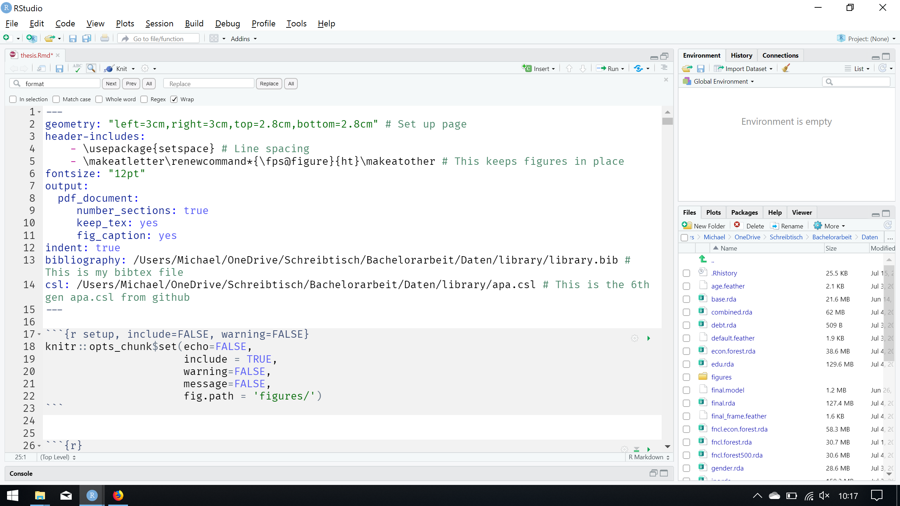

The YAML Header
The YAML header is the brain of your thesis. Parallel to \(\LaTeX\), you can just change one number in this header and your whole document changes.

The YAML header of my thesis starts with the page set up which is is achieved trough ‘geometry:’. You probably have some specifications for margins that you can just type in. Same with ‘fontsize:’. Note that this only works with .pdf and you have to allow your \(\LaTeX\) distibution to download packages on the go.